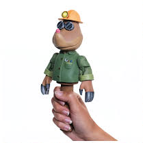
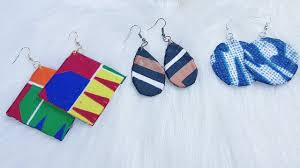

Téléphone
Développeur web Dessinateur Kara
ABI Gnim-gong Faustin
Étudiant passionné par la création : je construis des pages web en HTML, CSS et JavaScript, et je dessine dès que j'ai un crayon en main. J'apprends vite, je suis de nature calme et travailleur.
- HTML
- CSS
- JavaScript
- Dessin
- Gestion de chantier
Né le 18/11/2001
Étudiant
Information personnelles
À propos de moi
Un parcours qui mêle la précision du code, la patience du dessin et l'organisation du chantier.
J'habite à Lama Kpedan (Kara). Curieux de nature, je partage mon temps entre l'écriture de pages web, le crayon et le papier, et le travail de terrain sur les chantiers.
Cette double casquette technique et artistique m'a appris la rigueur, l'observation et le sens du détail — trois qualités que je mets dans chaque projet que j'entreprends.
« J'apprends vite, je suis de nature calme et travailleur. »
Ce qui me caractérise
- Apprentissage rapide
- Calme et concentré
- Travail sous pression
- Négociation
- Sens du commandement
- Œil artistique
Compétences techniques
HTML85%
CSS78%
JavaScript65%
Dessin & illustration80%
Formation
Mon parcours scolaire & créatif
Du collège aux ateliers d'artisanat : chaque étape m'a appris une manière différente de créer.
-
Collège
Collège Chaminade
Premières années d'études secondaires, où j'ai découvert le dessin et le travail soigné.
-
Lycée
Lycée Kara 2
Poursuite de ma scolarité et consolidation de mes méthodes de travail.
-
2010
Formation de marionnettiste
Action Sociale de Kara — travail de la matière, des volumes et du détail pour donner vie à des personnages.
-
Ateliers créatifs
Maison des Jeunes
Fabrication de boucles d'oreilles et de nombreux autres objets à partir de calendriers, de colle et de scotch — une première école de la débrouillardise et du recyclage créatif, commencée enfant.
Expérience professionnelle
Le terrain m'a formé
Trois chantiers supervisés à Kara : de quoi apprendre l'organisation, l'exigence et le travail en équipe.
Chef de chantier
Coordination des équipes, contrôle de la qualité, suivi de l'avancement des travaux et commandement au quotidien sur trois chantiers de construction.
Contrôleur de chantier
Vérification de la conformité des travaux, repérage des défauts et remontée des informations aux équipes pour corriger rapidement.
Compétences acquises
- Travailler sous pression
- Négocier avec les partenaires
- Commander et encadrer une équipe
- Conduire un tricycle
Galerie
Dessins au crayon
Portraits, manga, nature morte : cliquez sur une œuvre pour l'agrandir.


Fait main
Créations artisanales
Fabriquer avec ce qu'on a sous la main : un réflexe appris aux ateliers de la Maison des Jeunes.

Marionnettes
Conception de personnages, assemblage des matières et finitions, dans l'esprit de ma formation de marionnettiste.

Boucles d'oreilles
Bijoux légers et colorés découpés dans du papier recyclé : motifs géométriques, rayures et aplats.
Objets recyclés
Créations réalisées à partir de calendriers, de colle et de scotch — l'art de transformer l'ordinaire.
Contact
Travaillons ensemble
Un site à créer, un dessin à réaliser ou une question ? Écrivez-moi, je réponds rapidement.
- 98 38 95 01
- abignimgong@gmail.com
- Lama Kpedan, Kara